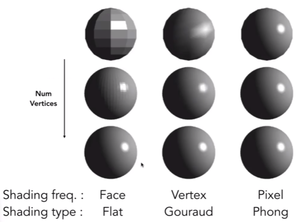

Shading
Definition: The process of applying a material to an object
Blinn-Phone Reflectance Model
{kind=link}
- Shading is local, we only care the property of the object itself, while not caring about other objects.
- So no shadows will be generated (shading \(\neq\) shadow)
Compute light reflected toward camera at a specific shading point:
Inputs:
- Viewer direction \(\mathbf{v}\)
- Surface normal \(\mathbf{n}\)
- Light drection \(\mathbf{l}\)
- Surface parameters (color, shininess, ...)
{kind=link}
Diffuse Reflection
- Light is scattered uniformly in all directions
- Surface color is the same for all viewing directions
{kind=link}
-
The light hitting the same surface at different angles will produce varying levels of brightness.
-
How much light(energy) is received? Lambert's cosine law:
{kind=link}
-
According to the law of energy conservation, the energy emitted by a point light source is the same at both near and far spheres.
-
So the energy of the light will diminish with the distance between the object and the point light source.
{kind=link}
Lambertian (Diffuse) Shading:
- \(L_d\) is diffusely reflected light
- \(k_d\) is the diffuse coefficient(color), which represents the color and the proportion of light that is diffusely reflected by the surface.
- \(I/r^2\) is the energy arrived at the shading point
- \(\max{(0, \mathbf{n}\cdot\mathbf{l})}\) represents the energy received by the shading point. We constrain the minimum value to 0 because a negative value indicates that the light is hitting the back of the surface, which is not visible.
- Diffuse reflection is independent of view direction
- Produces diffuse appearance
{kind=link}
Specular Reflection
-
Intensity depends on view direction
-
Bright near mirror reflection direction
- \(\mathbf{v}\) close to mirror direction \(\leftrightarrow\) half vector \(\mathbf{h}\) near normal
-
Measure "near" by dot product of unit vectors
{kind=link}
- \(L_s\) is specularly reflected light
- \(k_s\) is specular coefficient, generally \((1,1,1)\)(white)
- Increasing \(p\) narrows the reflection lobe
{kind=link}
{kind=link}
Ambient
- Light from environment, does not depend on anything
- Add constant color to account for disregarded illumination and fill in black shadows
- This is approximate and fake!
Blinn-Phong Reflection Model
{kind=link}
Shading Frequencies
So far, we have only discussed shading at a specific point.
Shade each triangle (flat shading)
-
Triangle face is flat: one normal vector
-
Shade once per triangle
-
Not good for smooth surfaces
{kind=link}
Shade each vertex (Gouraud shading)
-
Each vertex has a normal vector
-
Interpolate colors from vertices across triangle
{kind=link}
Shade each pixel (Phong shading)
-
Interpolate normal vectors across each triangle
-
Compute full shading model at each pixel
-
Not the Blinn-Phong Reflectance Model
{kind=link}
- Flat shading also produces good results with more faces. 
{kind=link}
Defining Per-Vertex Normal Vectors
-
Best to get vertex normals from the underlying geometry (e.g. a sphere)
-
Otherwise have infer vertex normals from triangle faces
- Simple scheme: average surrounding face normals
- Barycentric interpolation of vertex normals
{kind=link}
Note
Don't forget to normalize the interpolated directions
Graphics (real time) pipeline
{kind=link}
Shader Programs
- Program vertex and fragment processing stages
- Describe operation on a single vertex (or fragment)
uniform sampler2D myTexture;
uniform vec3 lightDir;
varying vec2 uv;
varying vec3 norm;
void diffuseShader()
{
vec3 kd;
kd = texture2d(myTexture, uv);
kd *= clamp(dot(-lightDir, norm), 0.0, 1.0);
gl_FragColor = vec4(kd, 1.0);
}
- Shader function executes once per fragment.
- Outputs color of surface at the current fragment's screen sample position.
- This shader performs a texture lookup to obtain the surface's material color at this point, then performs a diffuse lighting calculation.
Interpolation Across Triangles: Barycentric coordinates
-
Why do we want to interpolate?
- Specify values at vertices
- Obtain smoothly varying values across triangles
-
What do we want to interpolate?
- Texture coordinates, colors, normal vectors, ...
-
How do we interpolate?
- Barycentric coordinates
Barycentric coordinates
-
Given a triangle with vertex coordinates \(A\), \(B\), and \(C\), any point coplanar with the triangle can be represented as a linear combination of \(A\), \(B\), and \(C\).
- Here \(A,B\) and \(C\) are the coordinate of the vertex, i.e. \(A=(x_A,y_A)\)
-
This forms a coordinate system for triangles \((\alpha, \beta, \gamma)\)
- \((x,y)=\alpha A + \beta B + \gamma C\)
- \(\alpha + \beta + \gamma = 1\)
- this constrain the points to be in the same plane
- All three coordinates are non-negative if \((x,y)\) is inside the triangle.
{kind=link}
- How can we get the Barycentric coordinate for a point inside the triangle?
- The coefficient are proportional to areas
{kind=link}
-
What's the barycentric coordinate of the centroid?
- \(\alpha = \beta = \gamma = \frac{1}{3}\)
-
You can also get the coordinate using the following formula
Using barycentric coordinates
- Linearly interpolate values at vertices
- \(V_A, V_B, V_C\) can be positions, texture coordinates, color, normal, depth, material attributes ...
{kind=link}
Note
However, barycentric coordinates are not invariant under projection! The barycentric coordinates may change after projection. It is better to compute this in 3D space.
Bilinear Interpolation
- Define: \(\text{lerp}(x,v_0,v_1)=v_0+x(v_1-v_0)\)
- First interpolate horizontally:
- \(u_0=\text{lerp}(s,u_{00},u_{10})\)
- \(u_1=\text{lerp}(s,u_{01},u_{11})\)
- The vertical lerp to get the result:
- \(f(x,y) = \text{lerp}(t,u_{0},u_{1})\)
{kind=link}
Texture Mapping
-
Surfaces are 2D images lives in 3D world space
-
Every 3D surface point maps to a point in the 2D image (texture)
{kind=link}
- Each triangle "copies" a piece of the texture image to the surface
{kind=link}
- Each triangle vertex is assigned a texture coordinate \((u,v)\). Generally, both \(u\) and \(v\) are in range \([0,1]\)
Applying Textures
- Simple Texture Mapping: Diffuse Color
for each rasterized screen sample (x,y):
(u,v) = evaluate texture coordinate at (x,y)
texcolor = texture.sample(u,v);
set sample's color to texcolor;
Texture Magnification
-
What if the texture is too small?
-
Generally don't want this: insufficient texture resolution
-
texel: a pixel on a texture
-
Many texels are mapped to one pixel
{kind=link}
- What if the texture is too big?
{kind=link}
- Why?
- The near pixel covers a small range of texels, while the far pixel covers a large range.
- Problems arise when we use a single texel to represent a large range.
{kind=link}
- Will supersampling work?
- Yes, high quality, but costly
- When highly minified, many texels in pixel footprint
- Signal frequency too large in a pixel
- Need even higher sampling frequency
{kind=link}
-
Let's understand this problem in another way
- What if we don't sample?
- Just need to get the average value within a range!
-
Point Query: Given a point, return its value
-
Average Range Query: Given a range, return its average value.
Mipmap
- Allowing fast, approximate and square range queries
{kind=link}
-
Level 0 is the original image
-
Resolution is quartered with each level increase.
-
Can be precomputed
-
Storage overhead is only one-third of the original storage
Computing Mipmap Level \(D\)
- Estimate texture footprint using texture coordinates of neigboring screen samples. That is, how many units a texel in texture space will move when a pixel move one unit.
-
\(D\) rounds to the nearset integer
-
Query the texel in Level \(D\)
{kind=link}
Smooth Boundary
- Problem: The result is not smooth in the boundary of different level
{kind=link}
- How to solve? Using trilinear interpolation
{kind=link}
{kind=link}
- Limitations: Overblur
{kind=link}
- Why? There are irregular pixel footprint in texture.

Anisotropic Filtering
Ripmaps and summed area tables * Can look up axis-aligned rectangular zones * Diagonal footprints still a problem
{kind=link}
EWA filtering * Use multiple lookups * Weighted average * Mipmap hierarchy still helps * Can handle irregular footprints
{kind=link}
Application
In modern GPUs, texture = memory + range query (filtering)
- General method to bring data to fragment calculations
Many applications
- Environment lighting
- Store microgeometry
- Procedural textures
- Solid modeling
- Volume rendering
Environment Map
We can use texture to represent light from environment
{kind=link}
Note
Actually, the environment light is related to both position and direction, but here we approximate it by assuming the light source is infinitely far away.
Spherical Environment Map
Assuming you place a mirror sphere in the middle of the scene, you will be able to observe the reflections of the environment light on its surface, which helps in understanding the light's behavior.
- This inspires us to store the environment light on a sphere, which is called a Spherical Environment Map.
{kind=link}
- Problem: The top and bottom parts are prone to distortion
{kind=link}
Cube Map
-
Store the environment light on a cube instead of a sphere, which is more uniform in each position.
-
The cube is textured with 6 square texture maps
-
Each direction vector maps to a cube point along it.
{kind=link}
-
Much less distortion
-
When querying a direction, need to first find the corresponding face.
{kind=link}
Bump & Normal Mapping
For a bumpy surface, it is costly to represent it using triangles
-
Use bump mapping to represent relative height to the underlying surface
-
Fake the detailed geometry
{kind=link}
Bump mappng adds surface detail without adding more triangles
-
Perturb surface normal per pixel for shading computation
-
"Height shift" per texel defined by a texture
-
The black line is the original surface while the orange one represents the perturbed surface
{kind=link}
Perturb The Normal
In flatland (2D case), assume the surface normal is \(n(p)=(0,1)\)
-
Derivative at \(p\) is \(dp=c\times [h(p+1)-h(p)]\)
- \(c\) is a constant to control the effect of bump mapping
-
Perturbed normal is then \(n(p)=(-dp,1).normalize()\)
In 3D case, assume the original surface normal \(n(p)=(0,0,1)\)
-
Derivatives at p are
- \(dp/du=c_1\times[h(\mathbf{u}+1)-h(\mathbf{u})]\)
- \(dp/dv=c_1\times[h(\mathbf{v}+1)-h(\mathbf{v})]\)
-
Perturbed normal is then \(n(p)=(-dp/du,-dp/dv,1).normalize()\)
Note
Note that this is in local coordinate since we constrain the original normal to \((0,0,1)\). The result should be transformed to world coordinate later.
Displacement Mapping
Displacement Mapping is a more advanced approach
-
Uses the same texture as in bumping mapping
-
Actually moves the vertices
-
More triangle needed to get a good result
{kind=link}
3D Procedural Noise + Solid Modeling
-
3D texture: Any point in 3D space has a texture value. The interior of an object also has texture.
-
Define 3D noise function to generate texture
{kind=link}
Provide Precomputed Shading
Texture can also store precomputed information
-
ambient occlusion: store information about which part of the ambient light will be occluded
-
multiply the shading result with the texture map. 0 means occluded.
{kind=link}
Note
Textures can store various types of information, including but not limited to color. The meaning depends on how you interpret it in the shader.
Gamma Correction
Gamma Correction is an important technique in graphics used to adjust the brightness representation of images on display devices.
Why is Gamma Correction Needed?
-
Human Perception
-
The human eye is more sensitive to changes in brightness in dark areas and less sensitive to changes in bright areas.
-
This perceptual characteristic can be described by a curve approximately following a power function.
-
-
Display Device Characteristics:
- Most display devices (e.g., monitors, TVs) have non-linear brightness output, typically following a curve approximately defined by \(V_{out}=V^{\gamma}_{in}\) is the display device's gamma value (usually 2.2).
-
Without gamma correction, images may appear too dark or too bright on display devices, failing to accurately reproduce the brightness of the original scene.
Principle
-
Gamma Encoding:
- During image saving or transmission, brightness values are gamma-encoded \(V_{encoded}=V_{linear}^{1/\gamma}\)
-
Gamma Decoding:
- During image display, brightness values are gamma-decoded \(V_{linear}=V_{encoded}^{\gamma}\)
-
typically using \(\gamma=2.2\)
Implementation
We always perform rendering or image processing in linear space, since brightness values in linear space are proportional to physical light intensity.
-
If textures are stored in gamma space (e.g., JPEG, PNG formats), perform gamma decoding on texture colors to transform them into linear space in the shader:
-
Perform gamma encoding on the final color for outputing on screen.
vec3 gammaCorrect(vec3 color) {
return pow(color, vec3(1.0 / 2.2));
}
vec3 gammaDecode(vec3 color) {
return pow(color, vec3(2.2));
}
void main() {
vec3 textureColor = texture2D(uSampler, vTexCoord).rgb;
vec3 linearColor = gammaDecode(textureColor); // Gamma decoding
// Perform lighting calculations in linearColor
vec3 finalColor = gammaCorrect(linearColor); // Gamma encoding
gl_FragColor = vec4(finalColor, 1.0);
}